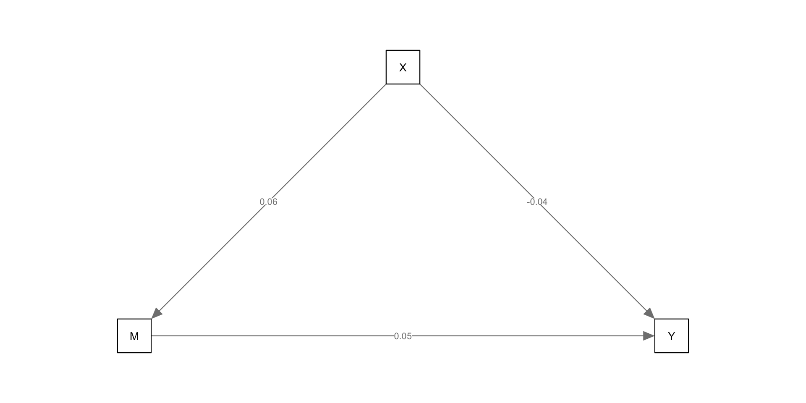

sem
Longitudinal Structural Equation Modeling
SEM is the broader umbrella from the GLM. With it we are able to do two interesting this:
Fit a latent measurement model (e.g., CFA)
Fit a structural model (e.g,. path analysis)
These two components allow us to address more difficult research questions involving but not limited to: multiple DVs, mediators, varying effects across time, unmeasured variables, constraints, and measurement invariance.
SEM terminology
Indicators or items or manifest variables
- Represented by squares in path diagrams
Latent or unobserved
- Represented by circles
Path diagrams
Circles = latent variables
Boxes = observed indicator variables
Two headed arrows = correlations/covariances/variances
Single head arrows = regressions
Triangle = means
Measurement model
The first step of an SEM model with latent variables is to define them. This is called specifying the measurement model. It is up to you to specify how you think the latent variable is created through the selection of indicators. It is theory driven, not exploratory.
The key components are the a) factor loadings, b) residuals, and c) variance of latent variable. We decide whether they are free or constrained.
Classical test theory interpretation
- Latent construct = what the indicators share in common
- Indicators represent the sum of True Score variance + Item specific variance + Random error
- Variance of the latent variable represents the amount of common information. Variance represents that meaningful differences btwn people.
- The residual errors (disturbances) represent the amount of information unique to each indicator. A combination of error and item-specific variance.
- The extent of the connection between the latent variable and the indicators is represented as a factor loading.
Generizability interpretation of latent variables
True score variance can be thought of as consisting as a combination of:
Construct variance- this is the truest true score variance.
Method variance- see Campbell and Fiske or sludge factor of Meehl.
Occasion/time specific- important for longitudinal, aging, and cohort analyses–and for this class.
- For longitudinal models, occasion specific variance can lead to biased estimates. We want to separate the occasion variance from the overall construct variance.
Formative indicators
These pretty pictures imply that the latent variables “cause” the indicators. This is the standard view and are referred to as reflexive indicators.
There is another approach, formative indicators, where indicators “cause” the latent variable. It is not real, only a combination of variables.
An example of this is SES. SES does not ‘exist’ but is a socially constructed idea.
Measurement error
A major advantage of SEM is that each latent variable does not contain measurement error. It is as is if we measured our variable with an alpha = 1.
Gets us closer to the population model, which could yield higher R2 and better parameter estimates.
Captures what is shared among the indicators. The measurement error associated with each indicator is uncorrelated with the latent variable. Compare with composite approach.
“Theoretically error free”. The latent variable is not only filled with true score variance (see above re: occasion and method variance). Unless you have multiple methods and occasions it is hard to parse them apart.
Path model
The path model component can be in addition to a measurement model or separate from them.
You have already worked with path models as a simple regression is a path model, so is a standard mediation.
You can make the path models more complex than these though, by specifying relationships among many variables.
An example with no measurement model
path model with measurement model
Estimating an SEM model
Compare our model implied associations to actual associations.
In addition to setting the measurement model and paths we may want to put apriori constraining parameters (variances/covariances/regressions) to reflect how we think variables are related.
Then we use or ML algorithm to get our model implied covariances/means as close as possible to the observed covariances/means.
Fit Indices
residuals. Good to check.
modification indices. Check to see if missing parameters that residuals may suggest you didn’t include or should include.
chi-square. (Statistical fit) Implied versus observed data, tests to see if model are exact fit with data.
RMSEA or SRMR (Absolute fit). Judges distance from perfect fit. Above .10 poor fit Below .08 acceptable
CFI, TFI (Relative fit models). Compares relative to a null model. Null models have no covariance among observed and latent variables. Range from 0-1. Indicate % of improvement from the null model to a saturated i.e. just identified model. Usually >.9 is okay. Some care about > .95
Identification
We have multiple parameters we are trying to estimate (Paths, means, variances, residuals. Cannot have more unknowns than knowns.
If you are asking too much you canconstrain parameters to be the same, which reduces the number of parameters.
Compare the number of knowns (variances and covariances) to the unknowns (model parameters). For example, a three indicator latent variable has 7 unknowns. 3 Loadings, 3 error variances and the variance of the latent variable
The covariance matrix has 6 data points. Thus we need to add in one more known, in this case a fixed factor or a marker variable.
Setting the scale
We are trying to measure clouds. Need to define the scale of a latent variable because there is no inherent scale of measurement.
Largely irrelevant as to what scale is chosen just as centering or standardizing yield no substantive changes.
Instead, scaling serves to establish a point of reference so as to interpret other parameters.
3 options:
Fixed factor. Here you fix the variance of the latent variable to 1 (standardized).
Marker variable. Here you fix one factor loading to 1. All other loadings are relative to this loading. The variance of the latent variable can thus be anything. This is often the default of software programs.
Effect coding. Here you constrain loading to average to 1. This will be helpful for us as we can then put the scale of measurement into our original metric. For longitudinal models this is helpful in terms of how to interpret the amount of change.
Types of identification
- Just identified is where the number of knowns equal unknowns. Also known as saturated model.
When you evaluate the fit of the model these will be perfect. So while these will estimate, we cannot examine whether or not our model is a good representation of the world, as we are simply recreating the observed covariance matrix (data).
Knowns - unknowns = df. Note that df in this case df will not directly relate to sample size, so it is a little different than typical degree of freedom concepts.
Types of identification
Over identified is when you have more knowns than unknowns. This is good as we can fit a model that is more parsimonious than our data. Moreover, we can examine fit stats.
Under identified is when you have problems and have more unknowns than knowns. this is because there is more than one solution available and the algorithm cannot decide e.g,. 2 + X = Y. If we add a constraint or a known value then it becomes manageable 2 + X = 12
Parcels
It is often necessary to simplify your model. Parcels combine indicators into a composite.
Benefits in terms of the assumptions of the indicator variables (multivariate normal).
You can combine items however you want into 3 or 4 parcels. You may balance highly loading with less highly loading items (item to construct technique) or you may pair pos and neg keyed items together.
Some dislike parcels because you are assuming each indicator is exchangeable.
Regarding means
- SEM is also known as covariance structure analysis. You can do SEM using only variance-covariance matrices. I.e means are not necessary.
- This is cool because you can technically reproduce the analyses of a paper if they give you a correlation matrix of study variables.
- Given we are interested in change across time,we will be interested in means. Latent variables by themselves do not have any inherent metric, it is up to us to choose the scale they are on. We can standardize them, use the original metric, and more!
Types of longitudinal SEM models
Growth models
Growth models + cross lags
Longitudinal CFA
Panel/cross lag/longitudinal path model/mediation
Latent change/difference score models
Mixture or class based longitudinal models
lavaan
library(lavaan)
wide <- read.csv("https://raw.githubusercontent.com/josh-jackson/longitudinal-2022/main/longitudinal.csv")
summary(wide) PosAFF11 PosAFF21 PosAFF31 NegAFF11
Min. :1.365 Min. :0.4152 Min. :1.140 Min. :-0.8584
1st Qu.:2.739 1st Qu.:2.6343 1st Qu.:2.797 1st Qu.: 1.1035
Median :3.209 Median :3.1143 Median :3.204 Median : 1.5075
Mean :3.212 Mean :3.1050 Mean :3.248 Mean : 1.5220
3rd Qu.:3.688 3rd Qu.:3.6216 3rd Qu.:3.775 3rd Qu.: 1.9815
Max. :5.804 Max. :6.1970 Max. :6.048 Max. : 3.2403
NegAFF21 NegAFF31 PosAFF12 PosAFF22
Min. :-0.3991 Min. :-0.5606 Min. :1.528 Min. :0.6575
1st Qu.: 1.0229 1st Qu.: 1.0100 1st Qu.:2.852 1st Qu.:2.6571
Median : 1.3718 Median : 1.4335 Median :3.215 Median :3.1206
Mean : 1.3971 Mean : 1.3981 Mean :3.253 Mean :3.1256
3rd Qu.: 1.7566 3rd Qu.: 1.8101 3rd Qu.:3.637 3rd Qu.:3.5467
Max. : 2.9844 Max. : 2.7674 Max. :5.413 Max. :5.4420
PosAFF32 NegAFF12 NegAFF22 NegAFF32
Min. :0.7369 Min. :0.1797 Min. :0.1784 Min. :-0.03494
1st Qu.:2.8484 1st Qu.:1.1464 1st Qu.:0.9963 1st Qu.: 1.02027
Median :3.2692 Median :1.3818 Median :1.3172 Median : 1.31692
Mean :3.2737 Mean :1.4115 Mean :1.3237 Mean : 1.30002
3rd Qu.:3.7170 3rd Qu.:1.7251 3rd Qu.:1.6382 3rd Qu.: 1.56441
Max. :5.9676 Max. :2.5033 Max. :2.5587 Max. : 2.44236
PosAFF13 PosAFF23 PosAFF33 NegAFF13
Min. :1.307 Min. :0.8057 Min. :1.629 Min. :-0.01837
1st Qu.:2.979 1st Qu.:2.7147 1st Qu.:2.858 1st Qu.: 1.15739
Median :3.299 Median :3.0832 Median :3.325 Median : 1.43937
Mean :3.302 Mean :3.0945 Mean :3.280 Mean : 1.43015
3rd Qu.:3.683 3rd Qu.:3.5296 3rd Qu.:3.698 3rd Qu.: 1.73650
Max. :4.712 Max. :4.8007 Max. :5.014 Max. : 2.75085
NegAFF23 NegAFF33
Min. :0.147 Min. :0.3145
1st Qu.:1.009 1st Qu.:1.0261
Median :1.294 Median :1.3154
Mean :1.281 Mean :1.2974
3rd Qu.:1.560 3rd Qu.:1.5583
Max. :2.447 Max. :2.6385 Wide data for SEM models.
PosAFF11 PosAFF21 PosAFF31 NegAFF11 NegAFF21 NegAFF31 PosAFF12 PosAFF22
1 3.407196 3.161366 2.691232 2.4207020 2.3531140 2.338767 3.608672 2.385396
2 2.594691 2.682974 2.676173 1.6652403 0.8228416 1.083938 3.103346 2.666753
3 3.168698 2.854090 3.277873 1.5646086 1.6909398 1.502032 2.327999 3.061529
4 4.600160 4.698997 4.751315 0.9352668 0.7944903 0.205178 4.254750 3.792440
5 1.911294 2.184561 1.661057 1.6076395 1.5046016 1.209850 3.971308 4.674580
6 3.472354 4.016982 4.021543 1.9754108 1.1348223 1.729405 3.845904 4.186825
PosAFF32 NegAFF12 NegAFF22 NegAFF32 PosAFF13 PosAFF23 PosAFF33 NegAFF13
1 3.029975 2.283468 2.3173734 2.3932485 3.561401 3.506353 3.862975 2.090484
2 3.251786 1.651941 1.7019345 1.3462416 2.893546 2.804488 2.637762 1.257376
3 3.272173 1.749022 1.6237575 1.5763265 2.705572 2.310391 2.841122 1.699849
4 3.934392 1.279030 0.8741891 1.1822674 3.212826 2.775791 3.239004 1.824778
5 4.093508 1.019751 1.0376248 0.7776716 3.487932 2.673107 3.093565 1.316975
6 4.316398 1.189548 1.1866801 1.3158520 3.236481 3.256453 4.023383 1.053895
NegAFF23 NegAFF33
1 1.3276333 1.6680488
2 1.6585273 1.4298172
3 1.7373582 1.8542867
4 1.3016450 1.5356285
5 0.7120284 0.7083461
6 1.4449087 0.9600753Anyone have some comments on naming conventions for this dataset?
Growth models
Growth models in an SEM framework is very similar to the MLM framework.
The major differences is how time is treated with time variables being the same for everyone, with a variable associated with it (categorical time).
Whereas previously we had a time variable, now we indirectly include time into our model by specifying when variables were assessed. This has the consequence of necessitating a wide format
Other than time, the idea behind the growth model is exactly the same.
Coding time
Let’s use the long dataset from the previous Bayesian workshop, taken from chapter 4 of Singer and Willet. It is a three wave longitudinal study of adolescents. We are looking at alcohol use during the previous year, measured from 0 - 7. COA is a variable indicating the child’s parents are alcoholics.
Code
X id age coa male age_14 alcuse peer cpeer ccoa
1 1 1 14 1 0 0 1.732051 1.2649111 0.2469111 0.549
2 2 1 15 1 0 1 2.000000 1.2649111 0.2469111 0.549
3 3 1 16 1 0 2 2.000000 1.2649111 0.2469111 0.549
4 4 2 14 1 1 0 0.000000 0.8944272 -0.1235728 0.549
5 5 2 15 1 1 1 0.000000 0.8944272 -0.1235728 0.549
6 6 2 16 1 1 2 1.000000 0.8944272 -0.1235728 0.549Code
# A tibble: 6 × 8
id coa male peer cpeer alcuse_14 alcuse_15 alcuse_16
<int> <int> <int> <dbl> <dbl> <dbl> <dbl> <dbl>
1 1 1 0 1.26 0.247 1.73 2 2
2 2 1 1 0.894 -0.124 0 0 1
3 3 1 1 0.894 -0.124 1 2 3.32
4 4 1 1 1.79 0.771 0 2 1.73
5 5 1 0 0.894 -0.124 0 0 0
6 6 1 1 1.55 0.531 3 3 3.16To fit a growth model within SEM we are going to create two latent variables: an intercept and a slope/trajectory. This is the same we did prior when we fit an MLM growth model with time as a predictor.
To define the latent variables we have to set constraints. These constraints are based on how we want to define each of these variables.
We define these two latent factors from our repeated measures. We then add constraints on the loadings to force the latent variables to be interpreted how we want them to be interpreted.
As before, the simplest way to think of the intercept is the initial value. While the slope indexes change. To obtain that, we will constrain the loadings to the intercept to be 1 for all repeated measures. This will obtain what is constant with respect to time.
But where is that constant located? Previously we could center or change our time variable to change the interpretation of the intercept.
We center within SEM by how we define the slope parameter. It is also how we code time in SEM.
Slope loadings are typically constrained linearly to represent a linear change (0,1,2,3 or -1,0,1). You can think of slope loadings as how we code time within MLM
The slope loadings typically include a constrained 0, so as to make the intercept interpretable. However, it is up to you to define where zero goes and what the rest of the loadings are.
how you code the loadings represent the pattern of change you expect. 0,1,2 suggests a straight line that does not increase in speed. 0,1,5, suggests something different.
The coefficients are interpreted as in regression whereas for a one unit change in the slope (time) corresponds to a coef change in your DV. Thus, you will change the magnitude of your slope parameter by choosing 0, .5, 1 versus 0, 10, 20.
Code
lavaan 0.6-11 ended normally after 22 iterations
Estimator ML
Optimization method NLMINB
Number of model parameters 8
Number of observations 82
Model Test User Model:
Test statistic 0.636
Degrees of freedom 1
P-value (Chi-square) 0.425
Parameter Estimates:
Standard errors Standard
Information Expected
Information saturated (h1) model Structured
Latent Variables:
Estimate Std.Err z-value P(>|z|)
i =~
alcuse_14 1.000
alcuse_15 1.000
alcuse_16 1.000
s =~
alcuse_14 0.000
alcuse_15 1.000
alcuse_16 2.000
Covariances:
Estimate Std.Err z-value P(>|z|)
i ~~
s -0.187 0.102 -1.841 0.066
Intercepts:
Estimate Std.Err z-value P(>|z|)
.alcuse_14 0.000
.alcuse_15 0.000
.alcuse_16 0.000
i 0.634 0.103 6.163 0.000
s 0.277 0.062 4.481 0.000
Variances:
Estimate Std.Err z-value P(>|z|)
.alcuse_14 0.064 0.147 0.436 0.663
.alcuse_15 0.420 0.094 4.463 0.000
.alcuse_16 0.280 0.180 1.556 0.120
i 0.807 0.193 4.177 0.000
s 0.234 0.083 2.803 0.005Compare with MLM
Code
Linear mixed model fit by REML ['lmerMod']
Formula: alcuse ~ age_14 + (age_14 | id)
Data: alcohol
REML criterion at convergence: 643.2
Scaled residuals:
Min 1Q Median 3Q Max
-2.48287 -0.37933 -0.07858 0.38876 2.49284
Random effects:
Groups Name Variance Std.Dev. Corr
id (Intercept) 0.6355 0.7972
age_14 0.1552 0.3939 -0.23
Residual 0.3373 0.5808
Number of obs: 246, groups: id, 82
Fixed effects:
Estimate Std. Error t value
(Intercept) 0.65130 0.10573 6.160
age_14 0.27065 0.06284 4.307
Correlation of Fixed Effects:
(Intr)
age_14 -0.441What is the same, what is different?
One notable difference is there is no residual. Instead of a single residual/sigma that we have with MLM here we have separate residuals.
The default of MLM is that these residuals are the same across measurement occasions. How could we model that here?
rescale time
Code
lavaan 0.6-11 ended normally after 26 iterations
Estimator ML
Optimization method NLMINB
Number of model parameters 8
Number of observations 82
Model Test User Model:
Test statistic 0.636
Degrees of freedom 1
P-value (Chi-square) 0.425
Parameter Estimates:
Standard errors Standard
Information Expected
Information saturated (h1) model Structured
Latent Variables:
Estimate Std.Err z-value P(>|z|)
i =~
alcuse_14 1.000
alcuse_15 1.000
alcuse_16 1.000
s =~
alcuse_14 0.000
alcuse_15 0.500
alcuse_16 1.000
Covariances:
Estimate Std.Err z-value P(>|z|)
i ~~
s -0.374 0.203 -1.841 0.066
Intercepts:
Estimate Std.Err z-value P(>|z|)
.alcuse_14 0.000
.alcuse_15 0.000
.alcuse_16 0.000
i 0.634 0.103 6.163 0.000
s 0.555 0.124 4.481 0.000
Variances:
Estimate Std.Err z-value P(>|z|)
.alcuse_14 0.064 0.147 0.436 0.663
.alcuse_15 0.420 0.094 4.463 0.000
.alcuse_16 0.280 0.180 1.556 0.120
i 0.807 0.193 4.177 0.000
s 0.936 0.334 2.803 0.005constraining slope to be fixed only
As with MLM we have options to handle the inclusion of random effects.
Code
lavaan 0.6-11 ended normally after 21 iterations
Estimator ML
Optimization method NLMINB
Number of model parameters 7
Number of observations 82
Model Test User Model:
Test statistic 7.508
Degrees of freedom 2
P-value (Chi-square) 0.023
Parameter Estimates:
Standard errors Standard
Information Expected
Information saturated (h1) model Structured
Latent Variables:
Estimate Std.Err z-value P(>|z|)
i =~
alcuse_14 1.000
alcuse_15 1.000
alcuse_16 1.000
s =~
alcuse_14 0.000
alcuse_15 0.500
alcuse_16 1.000
Covariances:
Estimate Std.Err z-value P(>|z|)
i ~~
s 0.083 0.114 0.731 0.465
Intercepts:
Estimate Std.Err z-value P(>|z|)
.alcuse_14 0.000
.alcuse_15 0.000
.alcuse_16 0.000
i 0.652 0.104 6.273 0.000
s 0.556 0.115 4.849 0.000
Variances:
Estimate Std.Err z-value P(>|z|)
s 0.000
.alcuse_14 0.416 0.100 4.172 0.000
.alcuse_15 0.331 0.084 3.923 0.000
.alcuse_16 0.692 0.138 5.003 0.000
i 0.541 0.147 3.676 0.000What is measurement invariance?
To meaningfully look at means, we need to have the means mean the same thing.
Otherwise, change could reflect people responding to the indicators differently. For example, a common item on an extraversion scale is “Do you like to go to parties?” This is likely interpreted differently by a 20 year old compared to a 70 year old.
Maturation is the easiest way to see measurement differences, but it also happens when you want to compare groups. This assumption is typically never critically examined.
types of MI
Configural (pattern). Asks: does your measure have the same factor structure? Typically always true with a decent measure of your construct. Can be tested through test statistics and eye-balling. Serves as default model to compare with our more stringent models.
Weak (metric/loading). Can be easily met. Not meeting this shows big problems, unless you are working with a really large dataset (where there is large power to find differences).
Strong (Scalar/intercept). Need to meet this designation to run longitudinal models and look at means across time.
Strict (residual/error variance). Not necessarily better than Strong, and does not need to be satisfied to use longitudinal models. Why might this not hold even if you are assessing the same construct? Hint: think of what residual variance is made up of.
configural (baseline)
config <- '
## define latent variables
Pos1 =~ PosAFF11 + PosAFF21 + PosAFF31
Pos2 =~ PosAFF12 + PosAFF22 + PosAFF32
Pos3 =~ PosAFF13 + PosAFF23 + PosAFF33
## correlated residuals across time
PosAFF11 ~~ PosAFF12 + PosAFF13
PosAFF12 ~~ PosAFF13
PosAFF21 ~~ PosAFF22 + PosAFF23
PosAFF22 ~~ PosAFF23
PosAFF31 ~~ PosAFF32 + PosAFF33
PosAFF32 ~~ PosAFF33
'
config <- cfa(config, data=wide, meanstructure=TRUE, std.lv=TRUE)
summary(config, standardized=TRUE, fit.measures=TRUE)lavaan 0.6-11 ended normally after 76 iterations
Estimator ML
Optimization method NLMINB
Number of model parameters 39
Number of observations 368
Model Test User Model:
Test statistic 9.266
Degrees of freedom 15
P-value (Chi-square) 0.863
Model Test Baseline Model:
Test statistic 2688.088
Degrees of freedom 36
P-value 0.000
User Model versus Baseline Model:
Comparative Fit Index (CFI) 1.000
Tucker-Lewis Index (TLI) 1.005
Loglikelihood and Information Criteria:
Loglikelihood user model (H0) -2040.957
Loglikelihood unrestricted model (H1) -2036.324
Akaike (AIC) 4159.914
Bayesian (BIC) 4312.329
Sample-size adjusted Bayesian (BIC) 4188.596
Root Mean Square Error of Approximation:
RMSEA 0.000
90 Percent confidence interval - lower 0.000
90 Percent confidence interval - upper 0.026
P-value RMSEA <= 0.05 0.997
Standardized Root Mean Square Residual:
SRMR 0.011
Parameter Estimates:
Standard errors Standard
Information Expected
Information saturated (h1) model Structured
Latent Variables:
Estimate Std.Err z-value P(>|z|) Std.lv Std.all
Pos1 =~
PosAFF11 0.656 0.030 22.030 0.000 0.656 0.906
PosAFF21 0.652 0.031 20.908 0.000 0.652 0.877
PosAFF31 0.682 0.031 22.157 0.000 0.682 0.908
Pos2 =~
PosAFF12 0.555 0.026 21.138 0.000 0.555 0.881
PosAFF22 0.643 0.030 21.651 0.000 0.643 0.894
PosAFF32 0.642 0.027 23.348 0.000 0.642 0.936
Pos3 =~
PosAFF13 0.509 0.024 21.036 0.000 0.509 0.888
PosAFF23 0.545 0.027 20.347 0.000 0.545 0.867
PosAFF33 0.537 0.026 20.763 0.000 0.537 0.878
Covariances:
Estimate Std.Err z-value P(>|z|) Std.lv Std.all
.PosAFF11 ~~
.PosAFF12 0.002 0.007 0.325 0.745 0.002 0.024
.PosAFF13 0.001 0.007 0.207 0.836 0.001 0.017
.PosAFF12 ~~
.PosAFF13 0.003 0.006 0.517 0.605 0.003 0.039
.PosAFF21 ~~
.PosAFF22 0.006 0.008 0.784 0.433 0.006 0.056
.PosAFF23 0.006 0.008 0.773 0.439 0.006 0.055
.PosAFF22 ~~
.PosAFF23 0.011 0.007 1.525 0.127 0.011 0.111
.PosAFF31 ~~
.PosAFF32 0.008 0.007 1.097 0.273 0.008 0.100
.PosAFF33 0.016 0.007 2.215 0.027 0.016 0.177
.PosAFF32 ~~
.PosAFF33 0.005 0.006 0.773 0.440 0.005 0.068
Pos1 ~~
Pos2 0.471 0.044 10.609 0.000 0.471 0.471
Pos3 0.399 0.048 8.226 0.000 0.399 0.399
Pos2 ~~
Pos3 0.450 0.046 9.806 0.000 0.450 0.450
Intercepts:
Estimate Std.Err z-value P(>|z|) Std.lv Std.all
.PosAFF11 3.212 0.038 85.122 0.000 3.212 4.437
.PosAFF21 3.105 0.039 80.035 0.000 3.105 4.172
.PosAFF31 3.248 0.039 82.962 0.000 3.248 4.325
.PosAFF12 3.253 0.033 99.116 0.000 3.253 5.167
.PosAFF22 3.126 0.037 83.356 0.000 3.126 4.345
.PosAFF32 3.274 0.036 91.602 0.000 3.274 4.775
.PosAFF13 3.302 0.030 110.504 0.000 3.302 5.760
.PosAFF23 3.094 0.033 94.403 0.000 3.094 4.921
.PosAFF33 3.280 0.032 102.942 0.000 3.280 5.366
Pos1 0.000 0.000 0.000
Pos2 0.000 0.000 0.000
Pos3 0.000 0.000 0.000
Variances:
Estimate Std.Err z-value P(>|z|) Std.lv Std.all
.PosAFF11 0.093 0.011 8.155 0.000 0.093 0.178
.PosAFF21 0.128 0.013 9.770 0.000 0.128 0.231
.PosAFF31 0.099 0.012 8.092 0.000 0.099 0.176
.PosAFF12 0.089 0.009 9.942 0.000 0.089 0.224
.PosAFF22 0.104 0.011 9.363 0.000 0.104 0.202
.PosAFF32 0.058 0.009 6.467 0.000 0.058 0.124
.PosAFF13 0.070 0.008 8.211 0.000 0.070 0.212
.PosAFF23 0.098 0.011 9.234 0.000 0.098 0.248
.PosAFF33 0.086 0.010 8.719 0.000 0.086 0.229
Pos1 1.000 1.000 1.000
Pos2 1.000 1.000 1.000
Pos3 1.000 1.000 1.000Notice that we didnt do anything different here except for fitting a mean structure and ask for fit.measures in the output.
Weak (constrain loadings)
With SEM models you can constrain or fix certain parameters to be whatever you want them to be. The syntax is some number or letters followed by an *. If the values are numbers, then it will force the parameters to be that number. If they are letter, then it names the parameter and forces all of those with the same naming scheme to be equivalent. But it allows the estimation to figure out what number it should be.
Weak measurement invariance test is to constrain the items to be equivalent across waves.
A special character is to “relax” constraints that are automatically included. Here NA is used to allow the latent variance at time 2 and 3 to be estimated, rather than to be constrained to 1 (bc below we used a fixed factor approach)
weak <- '
## define latent variables
Pos1 =~ L1*PosAFF11 + L2*PosAFF21 + L3*PosAFF31
Pos2 =~ L1*PosAFF12 + L2*PosAFF22 + L3*PosAFF32
Pos3 =~ L1*PosAFF13 + L2*PosAFF23 + L3*PosAFF33
## free latent variances at later times (only set the scale once)
Pos2 ~~ NA*Pos2
Pos3 ~~ NA*Pos3
## correlated residuals across time
PosAFF11 ~~ PosAFF12 + PosAFF13
PosAFF12 ~~ PosAFF13
PosAFF21 ~~ PosAFF22 + PosAFF23
PosAFF22 ~~ PosAFF23
PosAFF31 ~~ PosAFF32 + PosAFF33
PosAFF32 ~~ PosAFF33
'
weak <- cfa(weak, data=wide, meanstructure=TRUE, std.lv=TRUE)
summary(weak, standardized=TRUE, fit.measures=TRUE)lavaan 0.6-11 ended normally after 81 iterations
Estimator ML
Optimization method NLMINB
Number of model parameters 41
Number of equality constraints 6
Number of observations 368
Model Test User Model:
Test statistic 17.684
Degrees of freedom 19
P-value (Chi-square) 0.544
Model Test Baseline Model:
Test statistic 2688.088
Degrees of freedom 36
P-value 0.000
User Model versus Baseline Model:
Comparative Fit Index (CFI) 1.000
Tucker-Lewis Index (TLI) 1.001
Loglikelihood and Information Criteria:
Loglikelihood user model (H0) -2045.166
Loglikelihood unrestricted model (H1) -2036.324
Akaike (AIC) 4160.332
Bayesian (BIC) 4297.114
Sample-size adjusted Bayesian (BIC) 4186.072
Root Mean Square Error of Approximation:
RMSEA 0.000
90 Percent confidence interval - lower 0.000
90 Percent confidence interval - upper 0.042
P-value RMSEA <= 0.05 0.983
Standardized Root Mean Square Residual:
SRMR 0.021
Parameter Estimates:
Standard errors Standard
Information Expected
Information saturated (h1) model Structured
Latent Variables:
Estimate Std.Err z-value P(>|z|) Std.lv Std.all
Pos1 =~
PosAFF11 (L1) 0.631 0.027 23.651 0.000 0.631 0.894
PosAFF21 (L2) 0.677 0.029 23.460 0.000 0.677 0.887
PosAFF31 (L3) 0.686 0.029 23.837 0.000 0.686 0.910
Pos2 =~
PosAFF12 (L1) 0.631 0.027 23.651 0.000 0.582 0.894
PosAFF22 (L2) 0.677 0.029 23.460 0.000 0.625 0.886
PosAFF32 (L3) 0.686 0.029 23.837 0.000 0.633 0.931
Pos3 =~
PosAFF13 (L1) 0.631 0.027 23.651 0.000 0.503 0.883
PosAFF23 (L2) 0.677 0.029 23.460 0.000 0.540 0.864
PosAFF33 (L3) 0.686 0.029 23.837 0.000 0.547 0.885
Covariances:
Estimate Std.Err z-value P(>|z|) Std.lv Std.all
.PosAFF11 ~~
.PosAFF12 0.003 0.007 0.395 0.693 0.003 0.029
.PosAFF13 0.002 0.007 0.231 0.817 0.002 0.018
.PosAFF12 ~~
.PosAFF13 0.002 0.006 0.404 0.686 0.002 0.031
.PosAFF21 ~~
.PosAFF22 0.006 0.008 0.676 0.499 0.006 0.049
.PosAFF23 0.005 0.008 0.646 0.518 0.005 0.047
.PosAFF22 ~~
.PosAFF23 0.012 0.007 1.598 0.110 0.012 0.114
.PosAFF31 ~~
.PosAFF32 0.008 0.007 1.185 0.236 0.008 0.107
.PosAFF33 0.016 0.007 2.214 0.027 0.016 0.182
.PosAFF32 ~~
.PosAFF33 0.005 0.006 0.766 0.444 0.005 0.067
Pos1 ~~
Pos2 0.437 0.046 9.404 0.000 0.474 0.474
Pos3 0.319 0.042 7.578 0.000 0.400 0.400
Pos2 ~~
Pos3 0.332 0.047 7.030 0.000 0.450 0.450
Intercepts:
Estimate Std.Err z-value P(>|z|) Std.lv Std.all
.PosAFF11 3.212 0.037 87.342 0.000 3.212 4.553
.PosAFF21 3.105 0.040 78.061 0.000 3.105 4.069
.PosAFF31 3.248 0.039 82.691 0.000 3.248 4.311
.PosAFF12 3.253 0.034 95.798 0.000 3.253 4.994
.PosAFF22 3.126 0.037 85.004 0.000 3.126 4.431
.PosAFF32 3.274 0.035 92.400 0.000 3.274 4.817
.PosAFF13 3.302 0.030 111.238 0.000 3.302 5.799
.PosAFF23 3.094 0.033 94.971 0.000 3.094 4.951
.PosAFF33 3.280 0.032 101.745 0.000 3.280 5.304
Pos1 0.000 0.000 0.000
Pos2 0.000 0.000 0.000
Pos3 0.000 0.000 0.000
Variances:
Estimate Std.Err z-value P(>|z|) Std.lv Std.all
Pos2 0.853 0.086 9.942 0.000 1.000 1.000
Pos3 0.636 0.067 9.479 0.000 1.000 1.000
.PosAFF11 0.100 0.011 9.159 0.000 0.100 0.201
.PosAFF21 0.124 0.013 9.501 0.000 0.124 0.213
.PosAFF31 0.098 0.012 8.261 0.000 0.098 0.172
.PosAFF12 0.085 0.009 9.548 0.000 0.085 0.201
.PosAFF22 0.107 0.011 9.929 0.000 0.107 0.215
.PosAFF32 0.061 0.009 7.123 0.000 0.061 0.132
.PosAFF13 0.071 0.008 8.812 0.000 0.071 0.219
.PosAFF23 0.099 0.010 9.680 0.000 0.099 0.254
.PosAFF33 0.083 0.009 8.776 0.000 0.083 0.218
Pos1 1.000 1.000 1.000Strong (constrain loadings and intercepts)
Strong introduces means to the equation. Well, they were there before, estimated by default because we set meanstructure = TRUE. But now we are going to constrain the means of each item to be the same across time, again using labels.
Why are we doing that if we want to test whether people change? Shouldnt changes in the means exist? Well, we can
strong <- '
## define latent variables
Pos1 =~ L1*PosAFF11 + L2*PosAFF21 + L3*PosAFF31
Pos2 =~ L1*PosAFF12 + L2*PosAFF22 + L3*PosAFF32
Pos3 =~ L1*PosAFF13 + L2*PosAFF23 + L3*PosAFF33
## free latent variances at later times (only set the scale once)
Pos2 ~~ NA*Pos2
Pos3 ~~ NA*Pos3
## correlated residuals across time
PosAFF11 ~~ PosAFF12 + PosAFF13
PosAFF12 ~~ PosAFF13
PosAFF21 ~~ PosAFF22 + PosAFF23
PosAFF22 ~~ PosAFF23
PosAFF31 ~~ PosAFF32 + PosAFF33
PosAFF32 ~~ PosAFF33
## constrain intercepts across time
PosAFF11 ~ t1*1
PosAFF21 ~ t2*1
PosAFF31 ~ t3*1
PosAFF12 ~ t1*1
PosAFF22 ~ t2*1
PosAFF32 ~ t3*1
PosAFF13 ~ t1*1
PosAFF23 ~ t2*1
PosAFF33 ~ t3*1
## free latent means at later times (only set the scale once)
Pos2 ~ NA*1
Pos3 ~ NA*1'
strong <- cfa(strong, data=wide, meanstructure=TRUE, std.lv=TRUE)
summary(strong, standardized=TRUE, fit.measures=TRUE)lavaan 0.6-11 ended normally after 83 iterations
Estimator ML
Optimization method NLMINB
Number of model parameters 43
Number of equality constraints 12
Number of observations 368
Model Test User Model:
Test statistic 30.144
Degrees of freedom 23
P-value (Chi-square) 0.145
Model Test Baseline Model:
Test statistic 2688.088
Degrees of freedom 36
P-value 0.000
User Model versus Baseline Model:
Comparative Fit Index (CFI) 0.997
Tucker-Lewis Index (TLI) 0.996
Loglikelihood and Information Criteria:
Loglikelihood user model (H0) -2051.396
Loglikelihood unrestricted model (H1) -2036.324
Akaike (AIC) 4164.792
Bayesian (BIC) 4285.943
Sample-size adjusted Bayesian (BIC) 4187.591
Root Mean Square Error of Approximation:
RMSEA 0.029
90 Percent confidence interval - lower 0.000
90 Percent confidence interval - upper 0.055
P-value RMSEA <= 0.05 0.901
Standardized Root Mean Square Residual:
SRMR 0.024
Parameter Estimates:
Standard errors Standard
Information Expected
Information saturated (h1) model Structured
Latent Variables:
Estimate Std.Err z-value P(>|z|) Std.lv Std.all
Pos1 =~
PosAFF11 (L1) 0.631 0.027 23.635 0.000 0.631 0.893
PosAFF21 (L2) 0.676 0.029 23.441 0.000 0.676 0.886
PosAFF31 (L3) 0.686 0.029 23.838 0.000 0.686 0.910
Pos2 =~
PosAFF12 (L1) 0.631 0.027 23.635 0.000 0.582 0.894
PosAFF22 (L2) 0.676 0.029 23.441 0.000 0.624 0.886
PosAFF32 (L3) 0.686 0.029 23.838 0.000 0.633 0.932
Pos3 =~
PosAFF13 (L1) 0.631 0.027 23.635 0.000 0.503 0.882
PosAFF23 (L2) 0.676 0.029 23.441 0.000 0.539 0.862
PosAFF33 (L3) 0.686 0.029 23.838 0.000 0.547 0.885
Covariances:
Estimate Std.Err z-value P(>|z|) Std.lv Std.all
.PosAFF11 ~~
.PosAFF12 0.003 0.007 0.471 0.638 0.003 0.035
.PosAFF13 0.000 0.007 0.030 0.976 0.000 0.002
.PosAFF12 ~~
.PosAFF13 0.002 0.006 0.299 0.765 0.002 0.023
.PosAFF21 ~~
.PosAFF22 0.006 0.008 0.718 0.473 0.006 0.051
.PosAFF23 0.004 0.008 0.521 0.602 0.004 0.038
.PosAFF22 ~~
.PosAFF23 0.011 0.007 1.530 0.126 0.011 0.109
.PosAFF31 ~~
.PosAFF32 0.008 0.007 1.160 0.246 0.008 0.105
.PosAFF33 0.017 0.007 2.261 0.024 0.017 0.187
.PosAFF32 ~~
.PosAFF33 0.005 0.006 0.795 0.427 0.005 0.070
Pos1 ~~
Pos2 0.438 0.047 9.409 0.000 0.474 0.474
Pos3 0.320 0.042 7.590 0.000 0.401 0.401
Pos2 ~~
Pos3 0.332 0.047 7.027 0.000 0.450 0.450
Intercepts:
Estimate Std.Err z-value P(>|z|) Std.lv Std.all
.PosAFF11 (t1) 3.237 0.035 92.743 0.000 3.237 4.583
.PosAFF21 (t2) 3.084 0.038 81.945 0.000 3.084 4.043
.PosAFF31 (t3) 3.244 0.038 85.408 0.000 3.244 4.304
.PosAFF12 (t1) 3.237 0.035 92.743 0.000 3.237 4.967
.PosAFF22 (t2) 3.084 0.038 81.945 0.000 3.084 4.375
.PosAFF32 (t3) 3.244 0.038 85.408 0.000 3.244 4.771
.PosAFF13 (t1) 3.237 0.035 92.743 0.000 3.237 5.674
.PosAFF23 (t2) 3.084 0.038 81.945 0.000 3.084 4.931
.PosAFF33 (t3) 3.244 0.038 85.408 0.000 3.244 5.249
Pos2 0.044 0.055 0.798 0.425 0.047 0.047
Pos3 0.058 0.055 1.043 0.297 0.072 0.072
Pos1 0.000 0.000 0.000
Variances:
Estimate Std.Err z-value P(>|z|) Std.lv Std.all
Pos2 0.853 0.086 9.942 0.000 1.000 1.000
Pos3 0.636 0.067 9.475 0.000 1.000 1.000
.PosAFF11 0.101 0.011 9.188 0.000 0.101 0.203
.PosAFF21 0.125 0.013 9.527 0.000 0.125 0.215
.PosAFF31 0.097 0.012 8.216 0.000 0.097 0.172
.PosAFF12 0.086 0.009 9.551 0.000 0.086 0.201
.PosAFF22 0.107 0.011 9.947 0.000 0.107 0.216
.PosAFF32 0.061 0.009 7.094 0.000 0.061 0.132
.PosAFF13 0.073 0.008 8.865 0.000 0.073 0.223
.PosAFF23 0.101 0.010 9.725 0.000 0.101 0.257
.PosAFF33 0.083 0.009 8.706 0.000 0.083 0.216
Pos1 1.000 1.000 1.000Strict (loadings, intercept, residual variances)
strict <- '
## define latent variables
Pos1 =~ L1*PosAFF11 + L2*PosAFF21 + L3*PosAFF31
Pos2 =~ L1*PosAFF12 + L2*PosAFF22 + L3*PosAFF32
Pos3 =~ L1*PosAFF13 + L2*PosAFF23 + L3*PosAFF33
## free latent variances at later times (only set the scale once)
Pos2 ~~ NA*Pos2
Pos3 ~~ NA*Pos3
## correlated residuals across time
PosAFF11 ~~ PosAFF12 + PosAFF13
PosAFF12 ~~ PosAFF13
PosAFF21 ~~ PosAFF22 + PosAFF23
PosAFF22 ~~ PosAFF23
PosAFF31 ~~ PosAFF32 + PosAFF33
PosAFF32 ~~ PosAFF33
## equality of residuals
PosAFF11 ~~ r*PosAFF11
PosAFF12 ~~ r*PosAFF12
PosAFF13 ~~ r*PosAFF13
PosAFF21 ~~ r*PosAFF21
PosAFF22 ~~ r*PosAFF22
PosAFF23 ~~ r*PosAFF23
PosAFF31 ~~ r*PosAFF31
PosAFF32 ~~ r*PosAFF32
PosAFF33 ~~ r*PosAFF33
## constrain intercepts across time
PosAFF11 ~ t1*1
PosAFF21 ~ t2*1
PosAFF31 ~ t3*1
PosAFF12 ~ t1*1
PosAFF22 ~ t2*1
PosAFF32 ~ t3*1
PosAFF13 ~ t1*1
PosAFF23 ~ t2*1
PosAFF33 ~ t3*1
## free latent means at later times (only set the scale once)
Pos2 ~ NA*1
Pos3 ~ NA*1'
strict <- cfa(strict, data=wide, meanstructure=TRUE, std.lv=TRUE)
summary(strict, standardized=TRUE, fit.measures=TRUE)lavaan 0.6-11 ended normally after 82 iterations
Estimator ML
Optimization method NLMINB
Number of model parameters 43
Number of equality constraints 20
Number of observations 368
Model Test User Model:
Test statistic 60.491
Degrees of freedom 31
P-value (Chi-square) 0.001
Model Test Baseline Model:
Test statistic 2688.088
Degrees of freedom 36
P-value 0.000
User Model versus Baseline Model:
Comparative Fit Index (CFI) 0.989
Tucker-Lewis Index (TLI) 0.987
Loglikelihood and Information Criteria:
Loglikelihood user model (H0) -2066.569
Loglikelihood unrestricted model (H1) -2036.324
Akaike (AIC) 4179.139
Bayesian (BIC) 4269.025
Sample-size adjusted Bayesian (BIC) 4196.054
Root Mean Square Error of Approximation:
RMSEA 0.051
90 Percent confidence interval - lower 0.031
90 Percent confidence interval - upper 0.070
P-value RMSEA <= 0.05 0.445
Standardized Root Mean Square Residual:
SRMR 0.026
Parameter Estimates:
Standard errors Standard
Information Expected
Information saturated (h1) model Structured
Latent Variables:
Estimate Std.Err z-value P(>|z|) Std.lv Std.all
Pos1 =~
PosAFF11 (L1) 0.631 0.026 23.891 0.000 0.631 0.901
PosAFF21 (L2) 0.689 0.028 24.210 0.000 0.689 0.915
PosAFF31 (L3) 0.680 0.028 24.061 0.000 0.680 0.913
Pos2 =~
PosAFF12 (L1) 0.631 0.026 23.891 0.000 0.579 0.885
PosAFF22 (L2) 0.689 0.028 24.210 0.000 0.632 0.901
PosAFF32 (L3) 0.680 0.028 24.061 0.000 0.623 0.899
Pos3 =~
PosAFF13 (L1) 0.631 0.026 23.891 0.000 0.500 0.854
PosAFF23 (L2) 0.689 0.028 24.210 0.000 0.545 0.873
PosAFF33 (L3) 0.680 0.028 24.061 0.000 0.538 0.871
Covariances:
Estimate Std.Err z-value P(>|z|) Std.lv Std.all
.PosAFF11 ~~
.PosAFF12 0.004 0.007 0.617 0.537 0.004 0.045
.PosAFF13 0.002 0.007 0.280 0.780 0.002 0.020
.PosAFF12 ~~
.PosAFF13 0.003 0.007 0.394 0.693 0.003 0.029
.PosAFF21 ~~
.PosAFF22 0.003 0.007 0.346 0.730 0.003 0.027
.PosAFF23 0.002 0.007 0.228 0.820 0.002 0.018
.PosAFF22 ~~
.PosAFF23 0.009 0.007 1.259 0.208 0.009 0.098
.PosAFF31 ~~
.PosAFF32 0.011 0.007 1.508 0.132 0.011 0.117
.PosAFF33 0.016 0.007 2.310 0.021 0.016 0.177
.PosAFF32 ~~
.PosAFF33 0.008 0.007 1.186 0.236 0.008 0.091
Pos1 ~~
Pos2 0.433 0.046 9.372 0.000 0.472 0.472
Pos3 0.318 0.042 7.613 0.000 0.402 0.402
Pos2 ~~
Pos3 0.330 0.047 7.031 0.000 0.454 0.454
Intercepts:
Estimate Std.Err z-value P(>|z|) Std.lv Std.all
.PosAFF11 (t1) 3.236 0.035 92.686 0.000 3.236 4.617
.PosAFF21 (t2) 3.087 0.038 81.529 0.000 3.087 4.100
.PosAFF31 (t3) 3.245 0.038 86.233 0.000 3.245 4.359
.PosAFF12 (t1) 3.236 0.035 92.686 0.000 3.236 4.947
.PosAFF22 (t2) 3.087 0.038 81.529 0.000 3.087 4.402
.PosAFF32 (t3) 3.245 0.038 86.233 0.000 3.245 4.679
.PosAFF13 (t1) 3.236 0.035 92.686 0.000 3.236 5.530
.PosAFF23 (t2) 3.087 0.038 81.529 0.000 3.087 4.944
.PosAFF33 (t3) 3.245 0.038 86.233 0.000 3.245 5.251
Pos2 0.044 0.055 0.799 0.424 0.048 0.048
Pos3 0.052 0.055 0.945 0.345 0.066 0.066
Pos1 0.000 0.000 0.000
Variances:
Estimate Std.Err z-value P(>|z|) Std.lv Std.all
Pos2 0.841 0.085 9.950 0.000 1.000 1.000
Pos3 0.627 0.066 9.494 0.000 1.000 1.000
.PosAFF11 (r) 0.093 0.003 33.038 0.000 0.093 0.188
.PosAFF12 (r) 0.093 0.003 33.038 0.000 0.093 0.216
.PosAFF13 (r) 0.093 0.003 33.038 0.000 0.093 0.270
.PosAFF21 (r) 0.093 0.003 33.038 0.000 0.093 0.163
.PosAFF22 (r) 0.093 0.003 33.038 0.000 0.093 0.188
.PosAFF23 (r) 0.093 0.003 33.038 0.000 0.093 0.237
.PosAFF31 (r) 0.093 0.003 33.038 0.000 0.093 0.167
.PosAFF32 (r) 0.093 0.003 33.038 0.000 0.093 0.192
.PosAFF33 (r) 0.093 0.003 33.038 0.000 0.093 0.242
Pos1 1.000 1.000 1.000Other MI types
Note that there are other types of MI that we could investigate, depending on what we are interested in. We could look at equality of latent means and variances, as well as regressions, if they were in the model.
Comparing the models
Usually done through chi-square difference test. But this is a very sensitive test, especially with larger samples. Better to look at changes in CFI. If delta is .01 or greater than maybe it shows misfit.
Chi-Squared Difference Test
Df AIC BIC Chisq Chisq diff Df diff Pr(>Chisq)
weak 19 4160.3 4297.1 17.684
strong 23 4164.8 4285.9 30.144 12.461 4 0.01424 *
---
Signif. codes: 0 '***' 0.001 '**' 0.01 '*' 0.05 '.' 0.1 ' ' 1cfi
1 cfi
0.9973062 cfi
0.9888801 Longitudinal CFA
Starting point in longitudinal analysis. Can be simply thought of as does this construct relate to itself across time? And, to the extent that it does not, is that due to changes in how the construct is measured over time?
Substantively, these analyses get at the relative rank order of people across assessment points. What is nice is that unlike using composites, this looks at latent correlations across time. Also nice is that different measures can be used eg a cognitive ability exam for children which naturally differs in content across age groups.
key questions: 1. Should the correlations be the same across time? Should we set them (constrain) to be equal? 2. Should the error variances be correlated? 3. Are the loadings the same across time?
long.cfa <- '
## define latent variables
Pos1 =~ PosAFF11 + PosAFF21 + PosAFF31
Pos2 =~ PosAFF12 + PosAFF22 + PosAFF32
Pos3 =~ PosAFF13 + PosAFF23 + PosAFF33
Neg1 =~ NegAFF11 + NegAFF21 + NegAFF31
Neg2 =~ NegAFF12 + NegAFF22 + NegAFF32
Neg3 =~ NegAFF13 + NegAFF23 + NegAFF33
## correlated residuals across time
PosAFF11 ~~ PosAFF12 + PosAFF13
PosAFF12 ~~ PosAFF13
PosAFF21 ~~ PosAFF22 + PosAFF23
PosAFF22 ~~ PosAFF23
PosAFF31 ~~ PosAFF32 + PosAFF33
PosAFF32 ~~ PosAFF33
NegAFF11 ~~ NegAFF12 + NegAFF13
NegAFF12 ~~ NegAFF13
NegAFF21 ~~ NegAFF22 + NegAFF23
NegAFF22 ~~ NegAFF23
NegAFF31 ~~ NegAFF32 + NegAFF33
NegAFF32 ~~ NegAFF33
'
fit.long.cfa <- cfa(long.cfa, data=wide, std.lv=TRUE)lavaan 0.6-11 ended normally after 128 iterations
Estimator ML
Optimization method NLMINB
Number of model parameters 69
Number of observations 368
Model Test User Model:
Test statistic 119.443
Degrees of freedom 102
P-value (Chi-square) 0.114
Parameter Estimates:
Standard errors Standard
Information Expected
Information saturated (h1) model Structured
Latent Variables:
Estimate Std.Err z-value P(>|z|)
Pos1 =~
PosAFF11 0.654 0.030 21.936 0.000
PosAFF21 0.651 0.031 20.864 0.000
PosAFF31 0.685 0.031 22.361 0.000
Pos2 =~
PosAFF12 0.556 0.026 21.256 0.000
PosAFF22 0.638 0.030 21.448 0.000
PosAFF32 0.644 0.027 23.567 0.000
Pos3 =~
PosAFF13 0.508 0.024 21.028 0.000
PosAFF23 0.545 0.027 20.347 0.000
PosAFF33 0.538 0.026 20.827 0.000
Neg1 =~
NegAFF11 0.563 0.028 20.465 0.000
NegAFF21 0.479 0.024 19.856 0.000
NegAFF31 0.555 0.025 22.373 0.000
Neg2 =~
NegAFF12 0.365 0.019 18.989 0.000
NegAFF22 0.375 0.017 21.452 0.000
NegAFF32 0.368 0.017 21.383 0.000
Neg3 =~
NegAFF13 0.363 0.021 17.128 0.000
NegAFF23 0.341 0.017 19.493 0.000
NegAFF33 0.344 0.017 19.700 0.000
Covariances:
Estimate Std.Err z-value P(>|z|)
.PosAFF11 ~~
.PosAFF12 0.004 0.007 0.578 0.563
.PosAFF13 0.000 0.007 0.037 0.971
.PosAFF12 ~~
.PosAFF13 0.004 0.006 0.674 0.500
.PosAFF21 ~~
.PosAFF22 0.008 0.008 1.020 0.308
.PosAFF23 0.008 0.008 0.991 0.322
.PosAFF22 ~~
.PosAFF23 0.011 0.007 1.470 0.142
.PosAFF31 ~~
.PosAFF32 0.004 0.007 0.616 0.538
.PosAFF33 0.016 0.007 2.182 0.029
.PosAFF32 ~~
.PosAFF33 0.004 0.006 0.690 0.490
.NegAFF11 ~~
.NegAFF12 0.005 0.005 0.966 0.334
.NegAFF13 0.006 0.006 1.036 0.300
.NegAFF12 ~~
.NegAFF13 0.007 0.005 1.528 0.126
.NegAFF21 ~~
.NegAFF22 0.015 0.004 3.605 0.000
.NegAFF23 0.011 0.005 2.387 0.017
.NegAFF22 ~~
.NegAFF23 0.010 0.003 3.145 0.002
.NegAFF31 ~~
.NegAFF32 -0.006 0.004 -1.607 0.108
.NegAFF33 -0.008 0.004 -1.778 0.075
.NegAFF32 ~~
.NegAFF33 -0.001 0.003 -0.481 0.630
Pos1 ~~
Pos2 0.473 0.044 10.663 0.000
Pos3 0.399 0.048 8.228 0.000
Neg1 -0.436 0.047 -9.358 0.000
Neg2 -0.297 0.052 -5.706 0.000
Neg3 -0.169 0.056 -3.003 0.003
Pos2 ~~
Pos3 0.449 0.046 9.777 0.000
Neg1 -0.179 0.054 -3.279 0.001
Neg2 -0.543 0.041 -13.203 0.000
Neg3 -0.198 0.055 -3.578 0.000
Pos3 ~~
Neg1 -0.074 0.057 -1.304 0.192
Neg2 -0.167 0.056 -2.989 0.003
Neg3 -0.292 0.054 -5.442 0.000
Neg1 ~~
Neg2 0.526 0.043 12.317 0.000
Neg3 0.351 0.052 6.778 0.000
Neg2 ~~
Neg3 0.435 0.048 9.006 0.000
Variances:
Estimate Std.Err z-value P(>|z|)
.PosAFF11 0.096 0.011 8.497 0.000
.PosAFF21 0.130 0.013 9.956 0.000
.PosAFF31 0.095 0.012 7.944 0.000
.PosAFF12 0.087 0.009 10.044 0.000
.PosAFF22 0.110 0.011 9.883 0.000
.PosAFF32 0.055 0.009 6.438 0.000
.PosAFF13 0.070 0.008 8.319 0.000
.PosAFF23 0.098 0.011 9.317 0.000
.PosAFF33 0.085 0.010 8.716 0.000
.NegAFF11 0.104 0.011 9.546 0.000
.NegAFF21 0.091 0.009 10.363 0.000
.NegAFF31 0.056 0.009 6.475 0.000
.NegAFF12 0.062 0.006 10.835 0.000
.NegAFF22 0.037 0.004 8.445 0.000
.NegAFF32 0.033 0.004 7.917 0.000
.NegAFF13 0.084 0.008 10.660 0.000
.NegAFF23 0.043 0.005 8.170 0.000
.NegAFF33 0.038 0.005 7.372 0.000
Pos1 1.000
Pos2 1.000
Pos3 1.000
Neg1 1.000
Neg2 1.000
Neg3 1.000 unstandardized estimates
- Notice the difference in loadings
- Notice the difference in covariances
This uses the marker variable approach. The above uses the fixed factor method.
lavaan 0.6-11 ended normally after 144 iterations
Estimator ML
Optimization method NLMINB
Number of model parameters 69
Number of observations 368
Model Test User Model:
Test statistic 119.443
Degrees of freedom 102
P-value (Chi-square) 0.114
Parameter Estimates:
Standard errors Standard
Information Expected
Information saturated (h1) model Structured
Latent Variables:
Estimate Std.Err z-value P(>|z|)
Pos1 =~
PosAFF11 1.000
PosAFF21 0.996 0.041 24.232 0.000
PosAFF31 1.048 0.040 26.223 0.000
Pos2 =~
PosAFF12 1.000
PosAFF22 1.148 0.047 24.463 0.000
PosAFF32 1.159 0.043 27.012 0.000
Pos3 =~
PosAFF13 1.000
PosAFF23 1.072 0.049 22.027 0.000
PosAFF33 1.058 0.047 22.511 0.000
Neg1 =~
NegAFF11 1.000
NegAFF21 0.851 0.040 21.308 0.000
NegAFF31 0.985 0.042 23.372 0.000
Neg2 =~
NegAFF12 1.000
NegAFF22 1.027 0.049 21.002 0.000
NegAFF32 1.007 0.049 20.719 0.000
Neg3 =~
NegAFF13 1.000
NegAFF23 0.940 0.055 17.134 0.000
NegAFF33 0.948 0.056 16.997 0.000
Covariances:
Estimate Std.Err z-value P(>|z|)
.PosAFF11 ~~
.PosAFF12 0.004 0.007 0.578 0.563
.PosAFF13 0.000 0.007 0.037 0.971
.PosAFF12 ~~
.PosAFF13 0.004 0.006 0.674 0.500
.PosAFF21 ~~
.PosAFF22 0.008 0.008 1.020 0.308
.PosAFF23 0.008 0.008 0.991 0.322
.PosAFF22 ~~
.PosAFF23 0.011 0.007 1.470 0.142
.PosAFF31 ~~
.PosAFF32 0.004 0.007 0.616 0.538
.PosAFF33 0.016 0.007 2.182 0.029
.PosAFF32 ~~
.PosAFF33 0.004 0.006 0.690 0.490
.NegAFF11 ~~
.NegAFF12 0.005 0.005 0.966 0.334
.NegAFF13 0.006 0.006 1.036 0.300
.NegAFF12 ~~
.NegAFF13 0.007 0.005 1.528 0.126
.NegAFF21 ~~
.NegAFF22 0.015 0.004 3.605 0.000
.NegAFF23 0.011 0.005 2.387 0.017
.NegAFF22 ~~
.NegAFF23 0.010 0.003 3.145 0.002
.NegAFF31 ~~
.NegAFF32 -0.006 0.004 -1.607 0.108
.NegAFF33 -0.008 0.004 -1.778 0.075
.NegAFF32 ~~
.NegAFF33 -0.001 0.003 -0.481 0.630
Pos1 ~~
Pos2 0.172 0.023 7.457 0.000
Pos3 0.132 0.021 6.446 0.000
Neg1 -0.160 0.023 -6.937 0.000
Neg2 -0.071 0.014 -4.955 0.000
Neg3 -0.040 0.014 -2.866 0.004
Pos2 ~~
Pos3 0.127 0.018 7.088 0.000
Neg1 -0.056 0.018 -3.116 0.002
Neg2 -0.110 0.014 -8.074 0.000
Neg3 -0.040 0.012 -3.351 0.001
Pos3 ~~
Neg1 -0.021 0.016 -1.293 0.196
Neg2 -0.031 0.011 -2.860 0.004
Neg3 -0.054 0.011 -4.737 0.000
Neg1 ~~
Neg2 0.108 0.014 7.765 0.000
Neg3 0.072 0.013 5.512 0.000
Neg2 ~~
Neg3 0.058 0.009 6.483 0.000
Variances:
Estimate Std.Err z-value P(>|z|)
.PosAFF11 0.096 0.011 8.497 0.000
.PosAFF21 0.130 0.013 9.956 0.000
.PosAFF31 0.095 0.012 7.944 0.000
.PosAFF12 0.087 0.009 10.044 0.000
.PosAFF22 0.110 0.011 9.883 0.000
.PosAFF32 0.055 0.009 6.437 0.000
.PosAFF13 0.070 0.008 8.319 0.000
.PosAFF23 0.098 0.011 9.317 0.000
.PosAFF33 0.085 0.010 8.716 0.000
.NegAFF11 0.104 0.011 9.546 0.000
.NegAFF21 0.091 0.009 10.363 0.000
.NegAFF31 0.056 0.009 6.475 0.000
.NegAFF12 0.062 0.006 10.835 0.000
.NegAFF22 0.037 0.004 8.445 0.000
.NegAFF32 0.033 0.004 7.917 0.000
.NegAFF13 0.084 0.008 10.660 0.000
.NegAFF23 0.043 0.005 8.170 0.000
.NegAFF33 0.038 0.005 7.372 0.000
Pos1 0.427 0.039 10.968 0.000
Pos2 0.309 0.029 10.628 0.000
Pos3 0.258 0.025 10.514 0.000
Neg1 0.317 0.031 10.233 0.000
Neg2 0.133 0.014 9.494 0.000
Neg3 0.132 0.015 8.564 0.000We can also get standardized estimates in the the summary step, even when using the fixed factor approach.
lavaan 0.6-11 ended normally after 144 iterations
Estimator ML
Optimization method NLMINB
Number of model parameters 69
Number of observations 368
Model Test User Model:
Test statistic 119.443
Degrees of freedom 102
P-value (Chi-square) 0.114
Parameter Estimates:
Standard errors Standard
Information Expected
Information saturated (h1) model Structured
Latent Variables:
Estimate Std.Err z-value P(>|z|) Std.lv Std.all
Pos1 =~
PosAFF11 1.000 0.654 0.903
PosAFF21 0.996 0.041 24.232 0.000 0.651 0.875
PosAFF31 1.048 0.040 26.223 0.000 0.685 0.912
Pos2 =~
PosAFF12 1.000 0.556 0.883
PosAFF22 1.148 0.047 24.463 0.000 0.638 0.887
PosAFF32 1.159 0.043 27.012 0.000 0.644 0.940
Pos3 =~
PosAFF13 1.000 0.508 0.887
PosAFF23 1.072 0.049 22.027 0.000 0.545 0.867
PosAFF33 1.058 0.047 22.511 0.000 0.538 0.879
Neg1 =~
NegAFF11 1.000 0.563 0.868
NegAFF21 0.851 0.040 21.308 0.000 0.479 0.847
NegAFF31 0.985 0.042 23.372 0.000 0.555 0.920
Neg2 =~
NegAFF12 1.000 0.365 0.826
NegAFF22 1.027 0.049 21.002 0.000 0.375 0.889
NegAFF32 1.007 0.049 20.719 0.000 0.368 0.896
Neg3 =~
NegAFF13 1.000 0.363 0.782
NegAFF23 0.940 0.055 17.134 0.000 0.341 0.855
NegAFF33 0.948 0.056 16.997 0.000 0.344 0.869
Covariances:
Estimate Std.Err z-value P(>|z|) Std.lv Std.all
.PosAFF11 ~~
.PosAFF12 0.004 0.007 0.578 0.563 0.004 0.043
.PosAFF13 0.000 0.007 0.037 0.971 0.000 0.003
.PosAFF12 ~~
.PosAFF13 0.004 0.006 0.674 0.500 0.004 0.050
.PosAFF21 ~~
.PosAFF22 0.008 0.008 1.020 0.308 0.008 0.071
.PosAFF23 0.008 0.008 0.991 0.322 0.008 0.070
.PosAFF22 ~~
.PosAFF23 0.011 0.007 1.470 0.142 0.011 0.104
.PosAFF31 ~~
.PosAFF32 0.004 0.007 0.616 0.538 0.004 0.057
.PosAFF33 0.016 0.007 2.182 0.029 0.016 0.177
.PosAFF32 ~~
.PosAFF33 0.004 0.006 0.690 0.490 0.004 0.061
.NegAFF11 ~~
.NegAFF12 0.005 0.005 0.966 0.334 0.005 0.065
.NegAFF13 0.006 0.006 1.036 0.300 0.006 0.070
.NegAFF12 ~~
.NegAFF13 0.007 0.005 1.528 0.126 0.007 0.099
.NegAFF21 ~~
.NegAFF22 0.015 0.004 3.605 0.000 0.015 0.267
.NegAFF23 0.011 0.005 2.387 0.017 0.011 0.173
.NegAFF22 ~~
.NegAFF23 0.010 0.003 3.145 0.002 0.010 0.253
.NegAFF31 ~~
.NegAFF32 -0.006 0.004 -1.607 0.108 -0.006 -0.147
.NegAFF33 -0.008 0.004 -1.778 0.075 -0.008 -0.163
.NegAFF32 ~~
.NegAFF33 -0.001 0.003 -0.481 0.630 -0.001 -0.041
Pos1 ~~
Pos2 0.172 0.023 7.457 0.000 0.473 0.473
Pos3 0.132 0.021 6.446 0.000 0.399 0.399
Neg1 -0.160 0.023 -6.937 0.000 -0.436 -0.436
Neg2 -0.071 0.014 -4.955 0.000 -0.297 -0.297
Neg3 -0.040 0.014 -2.866 0.004 -0.169 -0.169
Pos2 ~~
Pos3 0.127 0.018 7.088 0.000 0.449 0.449
Neg1 -0.056 0.018 -3.116 0.002 -0.179 -0.179
Neg2 -0.110 0.014 -8.074 0.000 -0.543 -0.543
Neg3 -0.040 0.012 -3.351 0.001 -0.198 -0.198
Pos3 ~~
Neg1 -0.021 0.016 -1.293 0.196 -0.074 -0.074
Neg2 -0.031 0.011 -2.860 0.004 -0.167 -0.167
Neg3 -0.054 0.011 -4.737 0.000 -0.292 -0.292
Neg1 ~~
Neg2 0.108 0.014 7.765 0.000 0.526 0.526
Neg3 0.072 0.013 5.512 0.000 0.351 0.351
Neg2 ~~
Neg3 0.058 0.009 6.483 0.000 0.435 0.435
Variances:
Estimate Std.Err z-value P(>|z|) Std.lv Std.all
.PosAFF11 0.096 0.011 8.497 0.000 0.096 0.184
.PosAFF21 0.130 0.013 9.956 0.000 0.130 0.235
.PosAFF31 0.095 0.012 7.944 0.000 0.095 0.168
.PosAFF12 0.087 0.009 10.044 0.000 0.087 0.220
.PosAFF22 0.110 0.011 9.883 0.000 0.110 0.213
.PosAFF32 0.055 0.009 6.437 0.000 0.055 0.117
.PosAFF13 0.070 0.008 8.319 0.000 0.070 0.214
.PosAFF23 0.098 0.011 9.317 0.000 0.098 0.249
.PosAFF33 0.085 0.010 8.716 0.000 0.085 0.227
.NegAFF11 0.104 0.011 9.546 0.000 0.104 0.246
.NegAFF21 0.091 0.009 10.363 0.000 0.091 0.283
.NegAFF31 0.056 0.009 6.475 0.000 0.056 0.153
.NegAFF12 0.062 0.006 10.835 0.000 0.062 0.317
.NegAFF22 0.037 0.004 8.445 0.000 0.037 0.209
.NegAFF32 0.033 0.004 7.917 0.000 0.033 0.198
.NegAFF13 0.084 0.008 10.660 0.000 0.084 0.389
.NegAFF23 0.043 0.005 8.170 0.000 0.043 0.270
.NegAFF33 0.038 0.005 7.372 0.000 0.038 0.245
Pos1 0.427 0.039 10.968 0.000 1.000 1.000
Pos2 0.309 0.029 10.628 0.000 1.000 1.000
Pos3 0.258 0.025 10.514 0.000 1.000 1.000
Neg1 0.317 0.031 10.233 0.000 1.000 1.000
Neg2 0.133 0.014 9.494 0.000 1.000 1.000
Neg3 0.132 0.015 8.564 0.000 1.000 1.000introducing means.
Notice how we can also esimate means of the variables, though we don’t necessarily need to. These are now under the “intercepts” heading.
fit.long.cfa.us.mean <- cfa(long.cfa, meanstructure=TRUE, data=wide, std.lv=FALSE)
summary(fit.long.cfa.us.mean)lavaan 0.6-11 ended normally after 144 iterations
Estimator ML
Optimization method NLMINB
Number of model parameters 87
Number of observations 368
Model Test User Model:
Test statistic 119.443
Degrees of freedom 102
P-value (Chi-square) 0.114
Parameter Estimates:
Standard errors Standard
Information Expected
Information saturated (h1) model Structured
Latent Variables:
Estimate Std.Err z-value P(>|z|)
Pos1 =~
PosAFF11 1.000
PosAFF21 0.996 0.041 24.232 0.000
PosAFF31 1.048 0.040 26.223 0.000
Pos2 =~
PosAFF12 1.000
PosAFF22 1.148 0.047 24.463 0.000
PosAFF32 1.159 0.043 27.012 0.000
Pos3 =~
PosAFF13 1.000
PosAFF23 1.072 0.049 22.027 0.000
PosAFF33 1.058 0.047 22.511 0.000
Neg1 =~
NegAFF11 1.000
NegAFF21 0.851 0.040 21.308 0.000
NegAFF31 0.985 0.042 23.372 0.000
Neg2 =~
NegAFF12 1.000
NegAFF22 1.027 0.049 21.002 0.000
NegAFF32 1.007 0.049 20.719 0.000
Neg3 =~
NegAFF13 1.000
NegAFF23 0.940 0.055 17.134 0.000
NegAFF33 0.948 0.056 16.997 0.000
Covariances:
Estimate Std.Err z-value P(>|z|)
.PosAFF11 ~~
.PosAFF12 0.004 0.007 0.578 0.563
.PosAFF13 0.000 0.007 0.037 0.971
.PosAFF12 ~~
.PosAFF13 0.004 0.006 0.674 0.500
.PosAFF21 ~~
.PosAFF22 0.008 0.008 1.020 0.308
.PosAFF23 0.008 0.008 0.991 0.322
.PosAFF22 ~~
.PosAFF23 0.011 0.007 1.470 0.142
.PosAFF31 ~~
.PosAFF32 0.004 0.007 0.616 0.538
.PosAFF33 0.016 0.007 2.182 0.029
.PosAFF32 ~~
.PosAFF33 0.004 0.006 0.690 0.490
.NegAFF11 ~~
.NegAFF12 0.005 0.005 0.966 0.334
.NegAFF13 0.006 0.006 1.036 0.300
.NegAFF12 ~~
.NegAFF13 0.007 0.005 1.528 0.126
.NegAFF21 ~~
.NegAFF22 0.015 0.004 3.605 0.000
.NegAFF23 0.011 0.005 2.387 0.017
.NegAFF22 ~~
.NegAFF23 0.010 0.003 3.145 0.002
.NegAFF31 ~~
.NegAFF32 -0.006 0.004 -1.607 0.108
.NegAFF33 -0.008 0.004 -1.778 0.075
.NegAFF32 ~~
.NegAFF33 -0.001 0.003 -0.481 0.630
Pos1 ~~
Pos2 0.172 0.023 7.457 0.000
Pos3 0.132 0.021 6.446 0.000
Neg1 -0.160 0.023 -6.937 0.000
Neg2 -0.071 0.014 -4.955 0.000
Neg3 -0.040 0.014 -2.866 0.004
Pos2 ~~
Pos3 0.127 0.018 7.088 0.000
Neg1 -0.056 0.018 -3.116 0.002
Neg2 -0.110 0.014 -8.074 0.000
Neg3 -0.040 0.012 -3.351 0.001
Pos3 ~~
Neg1 -0.021 0.016 -1.293 0.196
Neg2 -0.031 0.011 -2.860 0.004
Neg3 -0.054 0.011 -4.737 0.000
Neg1 ~~
Neg2 0.108 0.014 7.765 0.000
Neg3 0.072 0.013 5.512 0.000
Neg2 ~~
Neg3 0.058 0.009 6.483 0.000
Intercepts:
Estimate Std.Err z-value P(>|z|)
.PosAFF11 3.212 0.038 85.141 0.000
.PosAFF21 3.105 0.039 80.039 0.000
.PosAFF31 3.248 0.039 82.975 0.000
.PosAFF12 3.253 0.033 99.077 0.000
.PosAFF22 3.126 0.037 83.350 0.000
.PosAFF32 3.274 0.036 91.552 0.000
.PosAFF13 3.302 0.030 110.512 0.000
.PosAFF23 3.094 0.033 94.436 0.000
.PosAFF33 3.280 0.032 102.909 0.000
.NegAFF11 1.522 0.034 45.016 0.000
.NegAFF21 1.397 0.030 47.359 0.000
.NegAFF31 1.398 0.031 44.488 0.000
.NegAFF12 1.412 0.023 61.269 0.000
.NegAFF22 1.324 0.022 60.181 0.000
.NegAFF32 1.300 0.021 60.718 0.000
.NegAFF13 1.430 0.024 59.112 0.000
.NegAFF23 1.281 0.021 61.551 0.000
.NegAFF33 1.297 0.021 62.890 0.000
Pos1 0.000
Pos2 0.000
Pos3 0.000
Neg1 0.000
Neg2 0.000
Neg3 0.000
Variances:
Estimate Std.Err z-value P(>|z|)
.PosAFF11 0.096 0.011 8.497 0.000
.PosAFF21 0.130 0.013 9.956 0.000
.PosAFF31 0.095 0.012 7.944 0.000
.PosAFF12 0.087 0.009 10.044 0.000
.PosAFF22 0.110 0.011 9.883 0.000
.PosAFF32 0.055 0.009 6.437 0.000
.PosAFF13 0.070 0.008 8.319 0.000
.PosAFF23 0.098 0.011 9.317 0.000
.PosAFF33 0.085 0.010 8.716 0.000
.NegAFF11 0.104 0.011 9.546 0.000
.NegAFF21 0.091 0.009 10.363 0.000
.NegAFF31 0.056 0.009 6.475 0.000
.NegAFF12 0.062 0.006 10.835 0.000
.NegAFF22 0.037 0.004 8.445 0.000
.NegAFF32 0.033 0.004 7.917 0.000
.NegAFF13 0.084 0.008 10.660 0.000
.NegAFF23 0.043 0.005 8.170 0.000
.NegAFF33 0.038 0.005 7.372 0.000
Pos1 0.427 0.039 10.968 0.000
Pos2 0.309 0.029 10.628 0.000
Pos3 0.258 0.025 10.514 0.000
Neg1 0.317 0.031 10.233 0.000
Neg2 0.133 0.014 9.494 0.000
Neg3 0.132 0.015 8.564 0.000Why are our latent variables zero? The cfa and sem functions fix the latent variable intercepts (which in this case correspond to the latent means) to zero. We have to override these defaults by asking the model to fit them. More on this below.
Second order growth model
Repeated measures are latent. Why would we want to do this? At least two reasons.
We can take advantage of the benefits of latent variables ie no measurement error.
we can impose constraints for measurement invariance across time (MI).
sec.order <- '
## define latent variables
Pos1 =~ NA*PosAFF11 + L1*PosAFF11 + L2*PosAFF21 + L3*PosAFF31
Pos2 =~ NA*PosAFF12 + L1*PosAFF12 + L2*PosAFF22 + L3*PosAFF32
Pos3 =~ NA*PosAFF13 + L1*PosAFF13 + L2*PosAFF23 + L3*PosAFF33
## intercepts
PosAFF11 ~ t1*1
PosAFF21 ~ t2*1
PosAFF31 ~ t3*1
PosAFF12 ~ t1*1
PosAFF22 ~ t2*1
PosAFF32 ~ t3*1
PosAFF13 ~ t1*1
PosAFF23 ~ t2*1
PosAFF33 ~ t3*1
## correlated residuals across time
PosAFF11 ~~ PosAFF12 + PosAFF13
PosAFF12 ~~ PosAFF13
PosAFF21 ~~ PosAFF22 + PosAFF23
PosAFF22 ~~ PosAFF23
PosAFF31 ~~ PosAFF32 + PosAFF33
PosAFF32 ~~ PosAFF33
## latent variable intercepts
Pos1 ~ 0*1
Pos2 ~ 0*1
Pos3 ~ 0*1
#model constraints for effect coding
## loadings must average to 1
L1 == 3 - L2 - L3
## means must average to 0
t1 == 0 - t2 - t3
i =~ 1*Pos1 + 1*Pos2 + 1*Pos3
s =~ 0*Pos1 + 1*Pos2 + 2*Pos3 '
fit.sec.order <- growth(sec.order, data=wide, missing = "ML")lavaan 0.6-11 ended normally after 99 iterations
Estimator ML
Optimization method NLMINB
Number of model parameters 44
Number of equality constraints 14
Number of observations 368
Number of missing patterns 1
Model Test User Model:
Test statistic 30.254
Degrees of freedom 24
P-value (Chi-square) 0.176
Model Test Baseline Model:
Test statistic 2688.088
Degrees of freedom 36
P-value 0.000
User Model versus Baseline Model:
Comparative Fit Index (CFI) 0.998
Tucker-Lewis Index (TLI) 0.996
Loglikelihood and Information Criteria:
Loglikelihood user model (H0) -2051.451
Loglikelihood unrestricted model (H1) -2036.324
Akaike (AIC) 4162.902
Bayesian (BIC) 4280.145
Sample-size adjusted Bayesian (BIC) 4184.966
Root Mean Square Error of Approximation:
RMSEA 0.027
90 Percent confidence interval - lower 0.000
90 Percent confidence interval - upper 0.053
P-value RMSEA <= 0.05 0.926
Standardized Root Mean Square Residual:
SRMR 0.025
Parameter Estimates:
Standard errors Standard
Information Observed
Observed information based on Hessian
Latent Variables:
Estimate Std.Err z-value P(>|z|)
Pos1 =~
PosAFF11 (L1) 0.950 0.014 68.551 0.000
PosAFF21 (L2) 1.018 0.015 69.038 0.000
PosAFF31 (L3) 1.033 0.014 73.342 0.000
Pos2 =~
PosAFF12 (L1) 0.950 0.014 68.551 0.000
PosAFF22 (L2) 1.018 0.015 69.038 0.000
PosAFF32 (L3) 1.033 0.014 73.342 0.000
Pos3 =~
PosAFF13 (L1) 0.950 0.014 68.551 0.000
PosAFF23 (L2) 1.018 0.015 69.038 0.000
PosAFF33 (L3) 1.033 0.014 73.342 0.000
i =~
Pos1 1.000
Pos2 1.000
Pos3 1.000
s =~
Pos1 0.000
Pos2 1.000
Pos3 2.000
Covariances:
Estimate Std.Err z-value P(>|z|)
.PosAFF11 ~~
.PosAFF12 0.003 0.007 0.465 0.642
.PosAFF13 0.000 0.007 0.029 0.977
.PosAFF12 ~~
.PosAFF13 0.002 0.006 0.306 0.759
.PosAFF21 ~~
.PosAFF22 0.006 0.008 0.716 0.474
.PosAFF23 0.004 0.008 0.520 0.603
.PosAFF22 ~~
.PosAFF23 0.011 0.007 1.518 0.129
.PosAFF31 ~~
.PosAFF32 0.008 0.007 1.159 0.247
.PosAFF33 0.017 0.007 2.253 0.024
.PosAFF32 ~~
.PosAFF33 0.005 0.006 0.791 0.429
i ~~
s -0.052 0.023 -2.216 0.027
Intercepts:
Estimate Std.Err z-value P(>|z|)
.PosAFF11 (t1) 0.210 0.045 4.645 0.000
.PosAFF21 (t2) -0.161 0.048 -3.344 0.001
.PosAFF31 (t3) -0.049 0.046 -1.067 0.286
.PosAFF12 (t1) 0.210 0.045 4.645 0.000
.PosAFF22 (t2) -0.161 0.048 -3.344 0.001
.PosAFF32 (t3) -0.049 0.046 -1.067 0.286
.PosAFF13 (t1) 0.210 0.045 4.645 0.000
.PosAFF23 (t2) -0.161 0.048 -3.344 0.001
.PosAFF33 (t3) -0.049 0.046 -1.067 0.286
.Pos1 0.000
.Pos2 0.000
.Pos3 0.000
i 3.192 0.034 92.584 0.000
s 0.019 0.018 1.016 0.310
Variances:
Estimate Std.Err z-value P(>|z|)
.PosAFF11 0.101 0.011 9.101 0.000
.PosAFF21 0.125 0.013 9.479 0.000
.PosAFF31 0.097 0.012 8.170 0.000
.PosAFF12 0.086 0.009 9.536 0.000
.PosAFF22 0.107 0.011 9.917 0.000
.PosAFF32 0.061 0.009 7.052 0.000
.PosAFF13 0.072 0.008 8.770 0.000
.PosAFF23 0.101 0.010 9.655 0.000
.PosAFF33 0.083 0.009 8.716 0.000
.Pos1 0.196 0.043 4.553 0.000
.Pos2 0.207 0.023 9.132 0.000
.Pos3 0.129 0.034 3.767 0.000
i 0.245 0.044 5.627 0.000
s 0.029 0.019 1.542 0.123
Constraints:
|Slack|
L1 - (3-L2-L3) 0.000
t1 - (0-t2-t3) 0.000